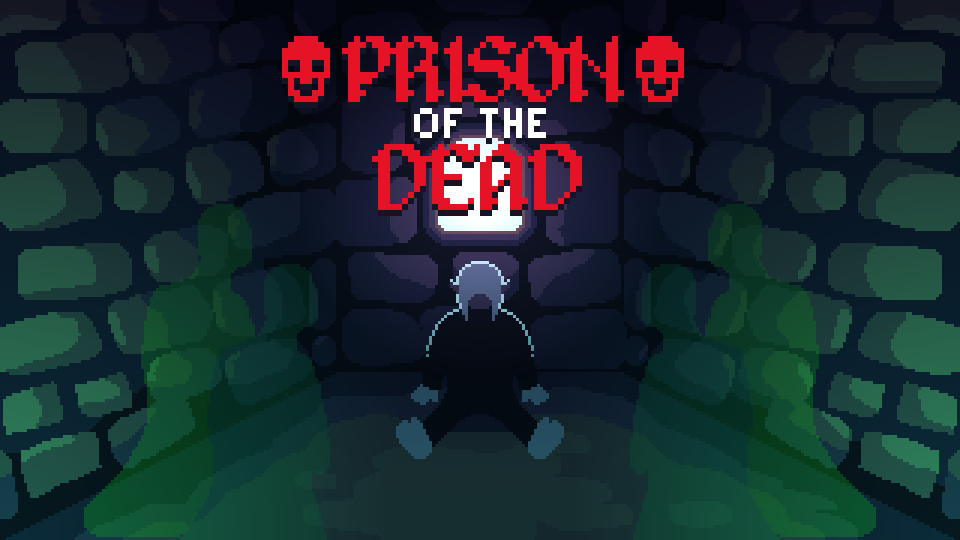

Portfolio
Liskov Bank var det första stora grupprojektet som vi
utvecklade under systemutvecklingsutbildningen...
Ett av de första projekten jag utvecklade på Campus
Varberg...
Prague Parking är en WinForms applikation som jag
skapade under programmering 2 kursen...

Prison of the Dead är ett kort actionspel med ett fåtal
pussel...